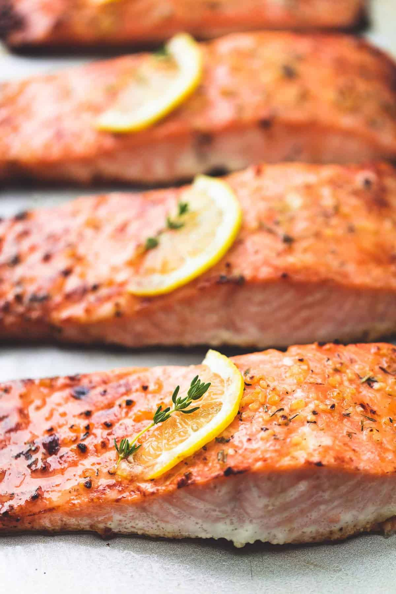

Baked Salmon

Full of delicious lemon and garlic flavors and baked to perfection, this salmon comes together in just 30 minutes! Perfect for a quick and easy protein to add to any dinner!
Ingredients
- 4 salmon fillets - about 6 ounces each
- 2 tablespoons olive oil
- ½ teaspoon salt - or to taste
- ¼ teaspoon cracked black pepper - just a pinch if using finely ground black pepper
- 2 teaspoons minced garlic
- 1 teaspoon Italian herb seasoning blend - OR herbs de provence, or ¼ teaspoon each dried thyme, parsley, oregano, and basil
- 1 medium lemon
Steps
- Preheat oven to 400 degrees and grease a large baking pan. Arrange salmon fillets on the baking sheet and season generously with salt and pepper.
- Stir together olive oil, garlic, herbs, and juice of 1/2 lemon. Spoon over salmon fillets being sure to rub all over the tops and sides of the salmon so it has no dry spots. Thinly slice remaining 1/2 of lemon and top each piece of salmon with a slice of lemon.
- Bake for 12-15 minutes until salmon is opaque and flaky when pulled apart with a fork. You can broil the last 1-2 minutes if desired.
- Garnish with fresh thyme or parsley if desired and serve.